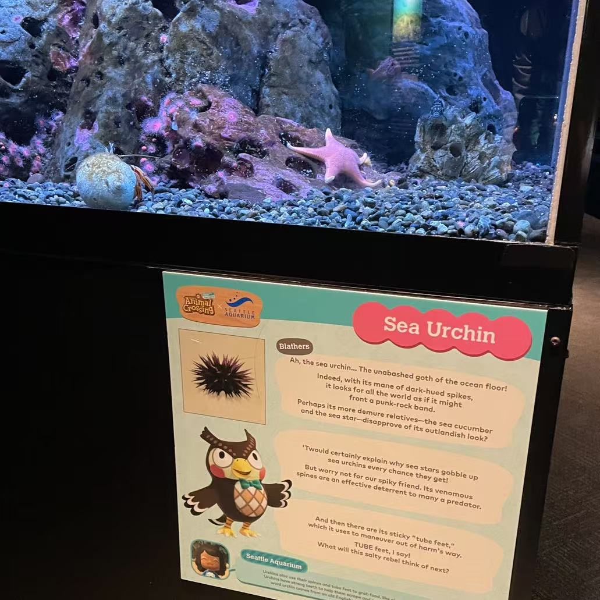
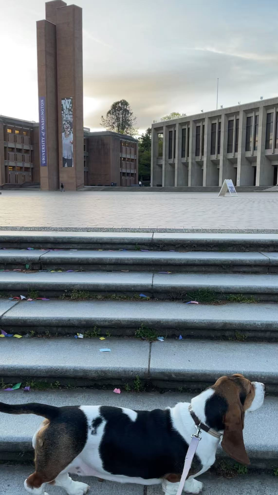
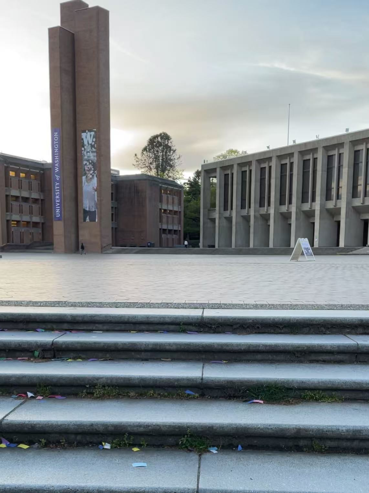

SEATTLE — Sam Kim
Seattle is beautiful.
My cousin first came here for undergrad, and stayed for her PhD at UW.
Later, she got married at the Seattle Aquarium.

I love aquariums. Growing up, my parents were usually busy, and I cannot remember the last time they accompanied me to one.
So standing inside the aquarium during my cousin's wedding felt strangely warm to me.
Like being temporarily adopted by my cousin and her family and friends.
Many of my cousin's friends were software engineers. Under their influence, I eventually became a double major in computer science and statistics.
The department of computer science and engineering graduates around 500 undergraduate students every year.
Sometimes I felt deeply pressured there. Like everyone else already took difficult courses, published papers or got internships.
Imposter syndrome became part of the atmosphere.
Loving Milky became a way to escape that pressure.
When she pulled me through the direction she'd like to sniff, my attention belonged entirely to her. For a while, I stopped thinking about competition, expectations, or whether I was falling behind.


Sometimes I wondered if I would not have such imposter syndrome if I transferred to Tufts.
Later, after finishing her PhD, my cousin told me she and her husband, and of course, Milky, were moving to Boston for work.
And, coincidentally, she would be working at Tufts.
It slowly started to feel like a big part of my life was going to shift to Boston parallely, without me. I couldn't stop imagining what if I had transferred to Tufts.